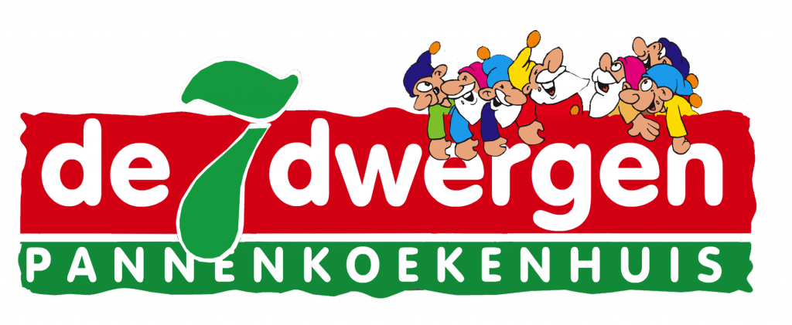
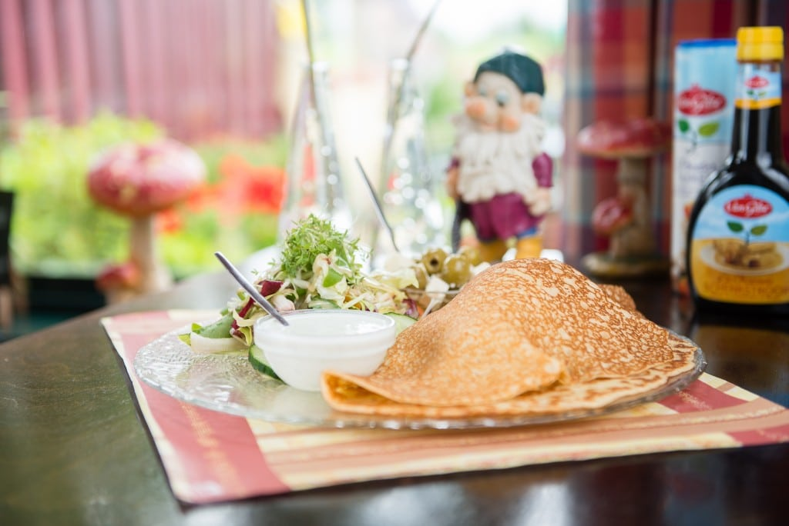
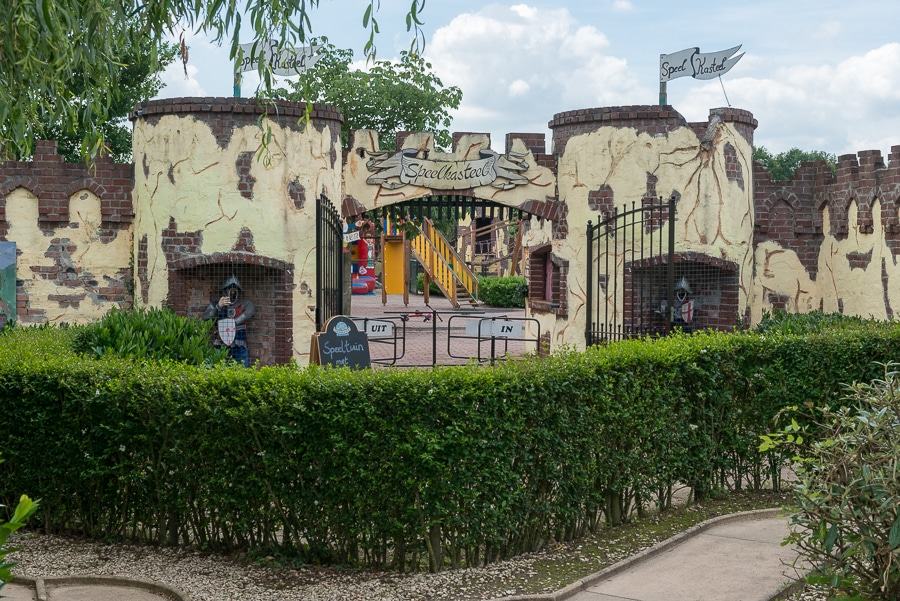
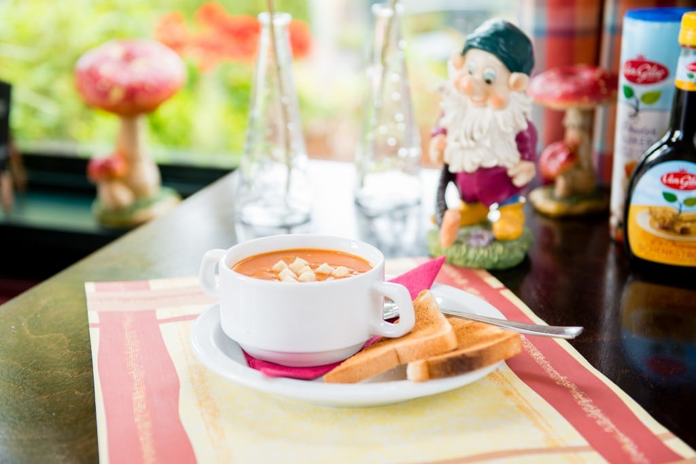
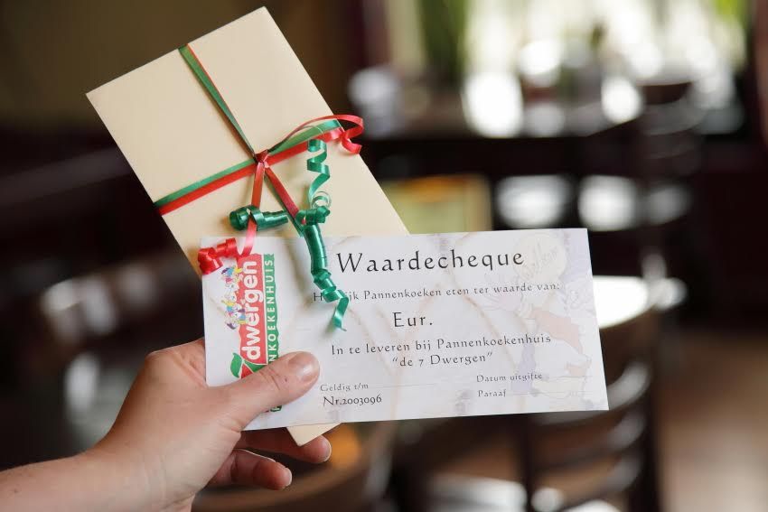

Speelkasteel
Onze grote, geheel vernieuwde buitenspeeltuin met ballenbak, touwbrug, springkussen, trampoline, glijbaan en schommels. Voor kinderen tot en met 12 jaar.

0485 - 350228Aan de Maas bij Cuijk, met uitzicht op de Mookerheide en het Reichswald. Avontuurlijk voor jong en oud.


Onze speeltuin en midgetgolfbaan zijn open. Reserveren kan online en telefonisch.
Pannenkoeken afhalen? Bel 0485 - 350228 en bestel.

Pannenkoekenhuis De 7 Dwergen bakt al sinds jaar en dag de lekkerste pannenkoeken, volgens eigen beproefd recept en met ingrediënten uit eigen streek.
Naast pannenkoeken serveren wij ook soepen, diverse maaltijdsalades, uitsmijters, omeletten, tosti’s en dagschotels met friet en salade. De kinderen vermaken zich prima in het vernieuwde speelkasteel, het dwergenhuis of op de midgetgolfbaan, terwijl de ouders rustig binnen aan tafel zitten of buiten op een van de terrassen genieten van een drankje, een hapje of een pannenkoek.
Speciaal dieet of allergie? Wij bakken pannenkoeken ook glutenvrij of met sojamelk.
Renate en Theo Fassaert
Buiten een kasteel, binnen een dwergenhuis en naast het terras een midgetgolfbaan. Vanaf het terras houdt u het speelkasteel goed in het oog.
Onze grote, geheel vernieuwde buitenspeeltuin met ballenbak, touwbrug, springkussen, trampoline, glijbaan en schommels. Voor kinderen tot en met 12 jaar.
18 holes naast het terras, met grote en kleine sticks. 3,00 per persoon.
Het binnenspeelhuis in het restaurant, met ballenbak, klautertoren, boksballen en klimnet. Voor kinderen tot en met 12 jaar, ook als het regent.
Bij gerechten krijgen kinderen dwergenmuntjes: 2 bij een soep, 4 bij een kinderpannenkoek en 8 bij een driegangen-kindermenu. In ons winkeltje zijn kadootjes te koop vanaf 2 muntjes. Muntjes bijkopen kan ook, voor 0,50 per stuk.
Bij elk feestje: onbeperkt ranja, een ijsje, spelen in het speelkasteel en het dwergenhuis, en dwergenmuntjes. De jarige krijgt er 12, elk vriendje of vriendinnetje 4.
Pannenkoek met stroop of poedersuiker
11,50 p.p.
Friet met snack en mayonaise
12,50 p.p.
Pannenkoek met stroop of poedersuiker, plus midgetgolf
13,50 p.p.
Friet met snack, plus midgetgolf
14,50 p.p.
Kinderfeestjes reserveert u telefonisch: 0485 - 350228. Liever een creatief feestje? Dat kan in samenwerking met Knutselclub Bij van Jansen (vanjansenshop.com).
Bel ons op 0485 - 350228 of reserveer online, voor een tafel of voor midgetgolf. Wilt u allebei? Maak dan twee reserveringen.
| Maandag | gesloten |
|---|---|
| Dinsdag | gesloten |
| Woensdag | 16.00 – 20.00 |
| Donderdag | 16.00 – 20.00 |
| Vrijdag | 16.00 – 20.00 |
| Zaterdag | 12.00 – 20.00 |
| Zondag | 12.00 – 20.00 |
Maandag 21, dinsdag 22 en woensdag 23 december. Zondag 27, maandag 28, dinsdag 29 en woensdag 30 december. Zaterdag 2 en zondag 3 januari.

Een middag pannenkoeken eten en spelen cadeau doen? Onze cadeaubonnen zijn er vanaf 10 euro; u kiest zelf het bedrag en het aantal. Ophalen kan tijdens openingstijden, of we sturen ze per post (2,50 verzendkosten, te betalen per overschrijving).
Wij accepteren ook Diner Cadeau-kaarten (zwart) en RestaurantCadeau-kaarten (rood), maar geen VVV-restaurantkaarten. Kortingsbonnen en cadeaukaarten gelden niet voor afhaalpannenkoeken.
Odiliadijk 6, 5435 XA Sint Agatha (Cuijk).
Over de dijk, waar de schapen het nog voor het zeggen hebben, maakt u ongestoord een prachtige wandeling of fietstocht. De routes langs de Maas tussen Cuijk, Boxmeer en Gennep zijn prachtig, en De 7 Dwergen is vaak het vertrek-, ontmoetings- of rustpunt. In de zomer bieden de uiterwaarden van de Maas vertier aan watersporters.
Vraag ons gerust naar de fietsroutes Cuijk, Boxmeer en Gennep.
Volg de A73 richting Venlo. Bij afslag Cuijk gaat u onderaan de afslag links af richting Cuijk. Op deze weg bevinden zich drie rotondes, deze steekt u recht over. Aan het einde van de weg komt u op de Maasboulevard (Katwijk–Boxmeer). Hier gaat u rechts af richting Boxmeer. Bij de eerste kruising gaat u links af naar St. Agatha via de Odiliadijk. Het pannenkoekenhuis vindt u na 300 meter aan de rechterkant.
Volg vanuit Grave de Beersebaan richting Beers; via Beers komt u in Cuijk. Op deze weg bevinden zich drie rotondes, deze steekt u recht over. Aan het einde van de weg komt u op de Maasboulevard (Katwijk–Boxmeer). Hier gaat u rechts af richting Boxmeer. Bij de eerste kruising gaat u links af naar St. Agatha via de Odiliadijk. Het pannenkoekenhuis vindt u na 300 meter aan de rechterkant.
Neem het veerpontje Cuijk–Middelaar. In Cuijk rijdt u het pontje af en volgt u de weg naar rechts. Aan het einde komt u op de Maasboulevard (Katwijk–Boxmeer). Hier gaat u links af richting Boxmeer. Bij de eerste kruising gaat u links af naar St. Agatha via de Odiliadijk. Het pannenkoekenhuis vindt u na 300 meter aan de rechterkant.
Neem bij Gennep de brug over de Maas richting Oeffelt. Bij de stoplichten gaat u rechts af richting Cuijk; na 200 meter neemt u op de rotonde de afslag Cuijk. U rijdt Oeffelt uit en volgt de Heerstraat tot de grote kruising bij ‘de Stier’ in Cuijk. Daar gaat u rechts af naar de Odiliadijk, richting St. Agatha. Het pannenkoekenhuis vindt u na 300 meter aan de rechterkant.
Neem op de A73 de afslag Oeffelt-Haps-Mill. Boven aan de afslag gaat u links af richting Oeffelt en op de rotonde neemt u de afslag Cuijk. U rijdt Oeffelt uit en volgt de Heerstraat tot de grote kruising bij ‘de Stier’ in Cuijk. Daar gaat u rechts af naar de Odiliadijk, richting St. Agatha. Het pannenkoekenhuis vindt u na 300 meter aan de rechterkant.
Pannenkoekenhuis De 7 Dwergen
Odiliadijk 6
5435 XA Sint Agatha (Cuijk)
856
gasten schreven een Google-recensie over De 7 Dwergen.